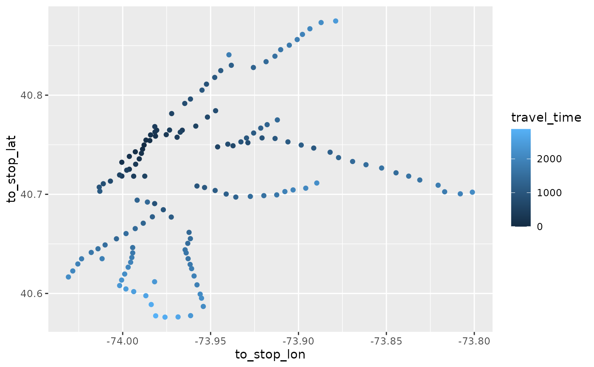

R/raptor.R
travel_times.RdFunction to calculate the shortest travel times from a stop (given by stop_name)
to all other stops of a feed. filtered_stop_times needs to be created before with
filter_stop_times() or filter_feed_by_date().
travel_times(
filtered_stop_times,
stop_name,
time_range = 3600,
arrival = FALSE,
max_transfers = NULL,
max_departure_time = NULL,
return_coords = FALSE,
return_DT = FALSE
)stop_times data.table (with transfers and stops tables as
attributes) created with filter_stop_times() where the
departure or arrival time has been set. Alternatively,
a filtered feed created by filter_feed_by_date() can be
used.
Stop name for which travel times should be calculated. A vector with multiple names is accepted.
All departures within this range in seconds after the first departure
of filtered_stop_times are considered for journeys. If arrival is
TRUE, all journeys arriving within time range before the latest arrival
of filtered_stop_times are considered.
If FALSE (default), all journeys start from stop_name. If
TRUE, all journeys end at stop_name.
The maximimum number of transfers
Either set this parameter or time_range. Only departures
before max_departure_time are used. Accepts "HH:MM:SS" or
seconds as a numerical value. Unused if arrival is TRUE.
Returns stop coordinates as columms. Default is FALSE.
travel_times() returns a data.table if TRUE. Default is FALSE which returns a tibble/tbl_df.
A table with travel times to/from all stops reachable by stop_name and their
corresponding journey departure and arrival times.
This function allows easier access to raptor() by using stop names instead of ids and
returning shortest travel times by default.
# \donttest{
nyc_path <- system.file("extdata", "google_transit_nyc_subway.zip", package = "tidytransit")
nyc <- read_gtfs(nyc_path)
# Use journeys departing after 7 AM with arrival time before 9 AM on 26th June
stop_times <- filter_stop_times(nyc, "2018-06-26", 7*3600, 9*3600)
tts <- travel_times(stop_times, "34 St - Herald Sq", return_coords = TRUE)
library(dplyr)
tts <- tts %>% filter(travel_time <= 3600)
# travel time to Queensboro Plaza is 810 seconds, 13:30 minutes
tts %>% filter(to_stop_name == "Queensboro Plaza") %>% pull(travel_time) %>% hms::hms()
#> 00:13:30
# plot a simple map showing travel times to all reachable stops
# this can be expanded to isochron maps
library(ggplot2)
ggplot(tts) + geom_point(aes(x=to_stop_lon, y=to_stop_lat, color = travel_time))

# }